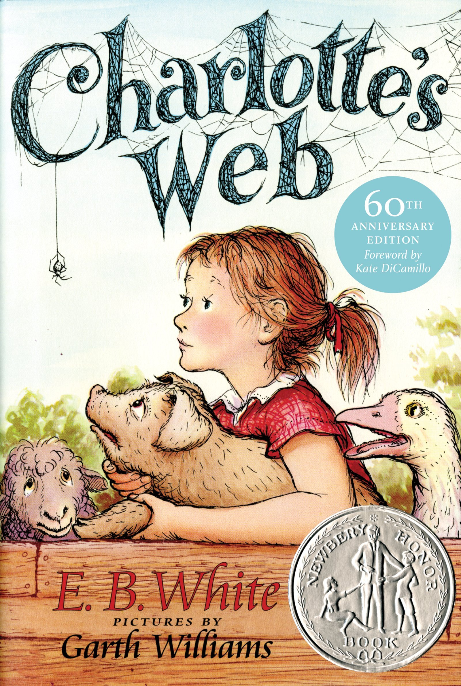

| Home | 7+ | 8-10 |
Charlotte's Web
A little pig named Wilbur was born as a runt, and Mr. Arable wanted to kill him. His daughter Fern begs him to live. Her father let's Fern keep him as a pet. Wilbur meets a lot of new friends including Charlotte.
I thought that Charlotte's Web was a great book because it was funny to read about how , Wilbur the pig made new friends, went on adventures , and learned new things. I thought that is was also funand enjoyable to read about charlotte the spider tell stories which were really good. I loved the part about the fair which i will not tell you about because when you read the book you can imagine it happening right in front of you. It is a great book to read by yourself or with a friend or a family member. Also there is a movie and I you watch it after you read the book.
Gooney Bird Green
There's never been anyone like Gooney Bird Greene at Watertower Elementary School. What other new kid comes to school wearing pajamas and cowboy boots one day and a polka-dot t-shirt and tutu on another? Gooney Bird has to sit right smack in the middle of the class because she likes to be in the middle of everything. She is the star of story time and keeps her teacher and classmates on the edge of their seats with her “absolutely true” stories.
I thought that this was a great book because it is really funny to read about all the stories that Gooney Bird Green tells her friends and teacher in class. The stories seem like they are made up but it is really suprising that they are true.
The Wizard of Oz
When a tornado rips through Kansas, Dorothy and her dog, Toto, are whisked away in their house to the magical land of Oz. They follow the Yellow Brick Road toward the Emerald City to meet the Wizard, and en route they meet a Scarecrow that needs a brain, a Tin Man missing a heart, and a Cowardly Lion who wants courage. The wizard asks the group to bring him the broom of the Wicked Witch of the West to earn his help.
This book was really good if you like to imagine things. It was like a story as a dream because the discription was a dream just to read about. I do recommend it for people who have good imagination and for anyone who would like to read it. The charecters are really funny and have their on personality and differences , just like a snow flakes.